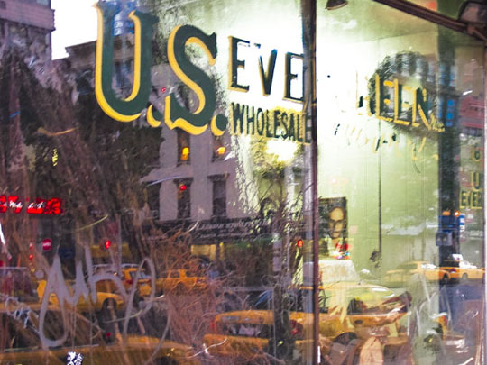
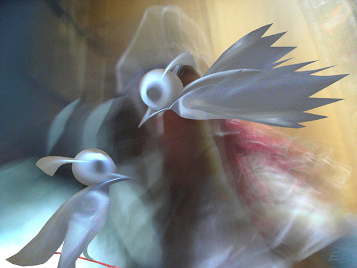
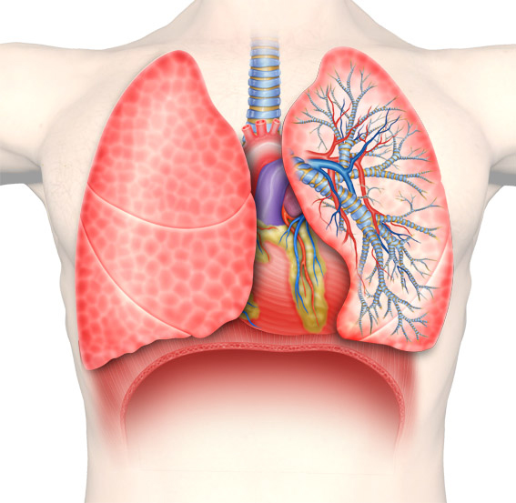

Click image to view artist's full exhibit
Hedera 2
by Allan Bodley
04/01/2022

Evergreen 
by Tom Bovo
04/02/2022
Playful 2009
by Carol K. Boyd
04/03/2022

The Key
by Rene Brady
04/04/2022

Watchers3
by Howard Brink
04/05/2022

Lovebirds 
by Ernst Brunzlik
04/06/2022
H. G. Wells
by Dominique Brunzlik
04/07/2022

Bike Ride (Back Gears)
by William Andrew Burnson
04/08/2022

Dance with Scarves
by Gerardo A. Caicedo
04/09/2022

Breath 
by Hudson Calasans
04/10/2022